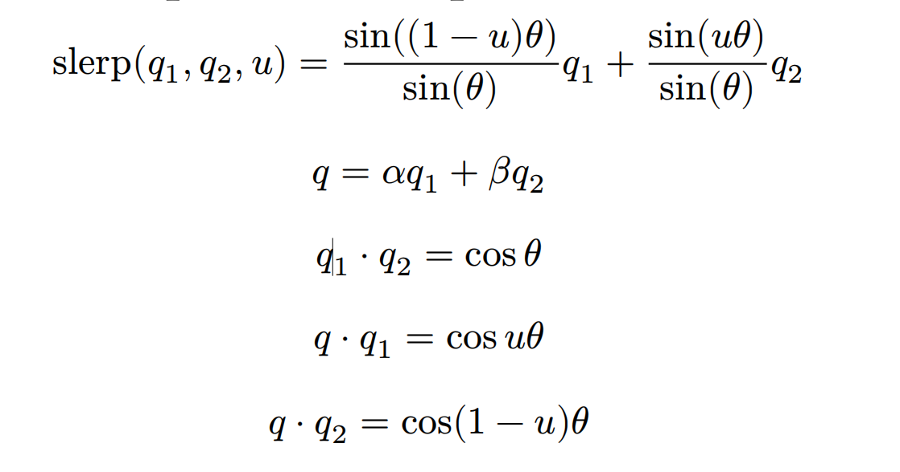

计算机动画 期末速成
考试形式
判断十五题，每题两分 问答题七题，每题十分
人的五感
视觉、听觉、嗅觉、味觉、触觉
2019年的图灵奖获得者
（Patrick Hanrahan，Edwin Catmull）
动画基本知识、动画形成的视觉原理
在图形上加上时间维度、动画师指定物体如何在空间和时间上移动 动画：每秒若干帧顺序播放若干静止图像帧已产生错觉的艺术 动画形成的视觉原理：利用人类 视觉残留 上个画面还没消失，下一个画面进入视觉如此循环往复，形成动画。
计算机动画在影视特技起到什么作用？
- 实现现实世界中无法拍摄到 的 ：恐龙等
- 可以拍摄到 成本高、太危险 ：龙卷风
了解Blender软件的特殊性
开源
计算机动画中的运动包括哪些参数？
- 景物位置、方向、大小、形状变化
- 虚拟摄像机的运动
- 表面纹理和色彩变化
动画中的“恐怖谷效应”Uncanny Valley
当机器和人类相似到一定程度时，就会变得极其反感，哪怕有一点不同也会变得明显刺目
SORA的动画生成流程和原理
根据提示词、文本指令、静态图像生成视屏动画 SORA数据集是短视屏，同类的短视频作为一个数据流形，投影到隐空间降维度，并在隐空间中切割成补丁，加上时间序列构成时空词元。每一个词元会记录帧序列号，和在帧的行序列号（空间位置）。
传统动画应用于三维计算机动画的12条基本原则及其原理
- Squash and Stretch（挤压和伸展）
- Anticipation（预备动作、预期性）
- Staging（场面调度、镜头布局）
- Straight-Ahead Action and Pose-to-Pose Action（按照时间顺序绘制、先关键帧再中间帧）
- Follow-Through and Overlapping Action（附属部分因惯性继续运动（follow-through）与重叠（身体部分停止时间不一致）动作）
- Slow In and Slow Out（慢入和慢出）
- Arcs（弧形动作）
- Secondary Action（附属动作）
- Timing（时序）
- Exaggeration（夸张）
- Solid drawing（扎实描绘）
- Appeal（吸引力）
- Depth of Field （衍生原则）（景深）
- Balance&Weight （衍生原则）（平衡与重量感）
旋转的5种表示方法
- Rolation Matrix 差值后不一定是还是旋转矩阵
- Fixed Angle （万向节死锁） 不能简单进行数值差值，理解成物体对于世界固定轴旋转
- Euler Angle （万向节死锁） 理解成物体带动轴旋转，所以刚好是Fixed Angle的反过程 \(R^{\prime}_z(\theta)R^{\prime}_y(\beta)R_x(\alpha) = R_x(\alpha)R_y(\beta)R_z(\theta)\)
- Angle and Axis 决定一个轴和一个旋转角度 \((n,\theta)\)
- Quaternion 方便差值
万向节Gimbal死锁的概念，旋转的四元数表示
Gimbal lock occurs when two of the rotation axes align \(q = (w,x,y,z) or (w,V)\\ q = Rot(\theta,(a_x,a_y,a_z)) = (cos(0.5\theta),sin(0.5\theta)(a_x,a_y,a_z))\\Roation: X_n = q X q^{-1}\)
旋转矩阵到四元数的转换公式
\(\mathbf{R_q}= \left[ \begin{matrix} 1-2y^2-2z^2 & 2xy-2wz & 2xz+2wy\\ 2xy+2wz & 1-2x^2-2z^2 & 2yz-2wx\\ 2xz-2wy & 2yz+2wx & 1-2x^2-2y^2 \end{matrix} \right]\)
Spherical Linear Interpolation (Slerp)公式

2D Shape Blending涉及哪两个子问题？基于内在形状插值的多边形渐变方法的基本思想。 Edge Tweaking的思想。
顶点对应关系、顶点差值问题 乌龟几何+Lagrange乘数法优化 顶点角不变，适当调整插值得到的边长，最小化平方占比，借助lagrange乘数
图像morphing的原理
指把一幅数字图像以一种自然流畅的、戏剧性的、超现实主义的方式变换到另一幅数字图像。 先进行几何对齐（网格、线段、曲线、点）两个满射（C1 C2）从初始满射到结束，和从结束满射到初始。设计两个warping函数 随时间变化。对两个warping后结果对齐后进行颜色差值
基于网格的图象morphing 原理
对于源图像和目标图像放置在拓扑相似的网格Ms和Md中，对两个网格进行差值得到中间帧的网格M，分别从原图像应用 Ms到M 获取 I0，同理 利用 Md到M 获取I1，对于 I0和I1差值获得中间图像
基于线对的 morphing 原理
采取逆向映射，现在两个图中找到 控制形变直线对，差值中间的直线对 - 对端点差值：旋转会导致变小 - 对中点朝向长度差值 再根据单一直线或者多直线变化获得 I1 I2 再次进行交融差值。
视域 morphing 的三个步骤
同时差值颜色、集合和视点 1. 前置变形(Prewarp)。对图象 I0 应用投影变换 H0-1，对图象 I1 应用投影变换 H1-1，生成前 置变形后的图象 I0′ 和 I1′。 2. Morphing。采用平行摄象机的方法，线性插值图象 I0′和 I1′ 相应点的位置和颜色，得到图象It’。 3. 后置变形(Postwarp)。对图象 It’ 应用变换 Ht，生成图象 It
基于 StyleGan 的肖像 Morphing 的原理
通过一个神经网络对这个复杂的函数进行建模，神经网络将一个简单的随机变量作为输入，并输出遵循“人脸概率分布”的随机变量。这个简单的随机变量被称为隐码(latent code)，隐码所在的空间称为隐空间(latent space) StyleGAN倾向于学习一个平滑的隐空间，即隐空间的接近区域中采样的隐码能生成相似的图像。这表明，在隐空间中的连续移动会产生一条平滑变化的图像路径，并且每个图像都接近目标域（真实的人脸）。 因此，对StyleGAN的两个隐码进行插值，可以在两个人脸图像之间产生非常自然平滑的渐变。
tyleGan 中的 Coarse styles、 Middle styles、 Fine styles 分别对应人脸的那些语义特征？
Coarse styles：控制人脸姿态、人脸几何形状等。大约对应网络的1-4层。 Middle styles：发型、部分人脸形状等。大约对应网络的5-8层。 Fine styles：肤色、发色、光影、背景等。大约对应网络剩下的层数。
二、三维形状渐变(morphing)各有什么优缺点
二维优点：简单 二维缺点：没有三维信息 三维优点：更加逼真 三维morphing的缺点:是物体之间的对应关系很难建立，而且该方法对物体的几何表示也相当苛刻，比如要求多边形的个数相等，物体的拓扑结构相同等等。
基于星形物体的多面体morphing方法
该方法通过合并一对三维多面体物体模型的拓扑结构，使得它们具有相同的顶点/边/面网络结构，然后对相应的顶点进行插值。在物体内选一内点，连接O和物体的顶点V，射线OV和单位球面的交点即为V的投影点(V)P。 星形物体：至少有一点 能看见所有顶点
基于体表示的三维morphing方法
给定源体S和目标体T，与二维图象morphing的思想类似，该方法首先根据指定的对应特征生成一空间变换，该变换使给定的两个体扭曲变形（warp）成S’和T’，达到几何对齐的目的；然后对得到的两个扭曲变形体S’和T’进行混合。 对特征元素e（位置，坐标系），初始和结束进行差值。逆向映射 通过s‘找到s初中的坐标，同理S末到 T‘。之后在进行混合。 多特征元素依赖加权 通常是 到e到距离 - 点：直接距离 - 边：到边的距离 - 长方形：可以是到边最短距离 也可以是到面最短距离
基于变分隐式曲面的三维Morphing
建立源物体和目标物体所对应的隐式曲面，差值这两个函数。 2D情形：对于二维形状，他们把所有的数据约束放在两个平面上，一个平面对应一个形状。然后把这两个平面平行地放在三维空间中。在形状的边界上指定0值约束，而在指向形状中心的边界法向方向指定正值约束。然后采用变分插值技术（薄板插值的三维推广），得到一个三维空间的隐式函数。中间帧的形状为这个三维函数的二维切片（零值轮廓）。 3D情形：三维Morphing则可通过4D插值问题来进行。 变分最小化能量函数（这个计算应该不用会吧）然后差值
●粒子系统的基本原理、粒子系统可以生成哪些自然现象？ ●元球的融合原理 ●粒子的碰撞检测和碰撞响应 ●为什么需要群组动画？ ●Flocking(群体) System的包含哪三种层次的行为？ ●Boids模型的三条原则，每条原则的含义 ●Reynolds导航方法中的追逐和躲避模型、障碍避免模型、路径跟随、 流场跟随行为模型、领导模型
基于内在形状插值的多边形渐变方法的数学原理
乌龟几何+拉格朗日乘数法 \(\alpha = (1-t)\alpha_{A_0}+t\alpha_{B_0} \\ \theta_i= (1-t)\theta_{A_0}+t\theta_{B_0}\\ L_i=(1-t)L_{A_0}+tL_{B_0}\)
但是不封闭 做长度微调 角度不变 \(L_{AB_i}= (1-t)L_{A_i}+tL_{B_i}+S_i\)
为了防止除0问题 \(L_{ABi} = max\{|L_{A_i}-L_{B_i}|,L_{tol}\}\) 于是定义目标函数 \(f(S_0,....S_m) = \sum \frac{S_i^2}{L_{AB_i}^2}\)
边界条件 强制封闭：
\(\phi_1=\sum[(1-t)L_{A_i}+tL_{B_i}+S_i]cos\alpha_i=0\\\) \(\phi_2=\sum[(1-t)L_{A_i}+tL_{B_i}+S_i]sin\alpha_i=0\)
其中 \(\alpha_i = \alpha_{i-1}+\theta_{i}\) 是与x轴夹角
借助拉格朗日乘数 对目标函数求偏导 $$ \frac{\partial S_i}{\partial \lambda} = \lambda_1 \cos \alpha_i + \lambda_2 \sin \alpha_i = -\frac{2S_i}{L_{AB_i}^2}, \quad (i = 0, 1, \dots, m)\\ \sum_{i=0}^{m} [(L_i^B - L_i^A)t + L_i^A+ S_i] \cos \alpha_i = 0\\ \sum_{i=0}^{m} [(L_i^B - L_i^A)t + L_i^A+ S_i] \sin \alpha_i = 0 $$ 把S算出带入 $$ \begin{cases} \lambda_1 E + \lambda_2 F = U \\ \lambda_1 F + \lambda_2 G = V \end{cases} $$
图像 Morphing 中由一对直线确定的变换公式
$$ u = \frac{PA}{|PQ|} = (X - P) \cdot \frac{(Q - P)}{|Q - P|} \times \frac{1}{|Q - P|} = \frac{(X - P) \cdot (Q - P)}{|Q - P|^2}\\ v = AX = (X - P) \cdot \frac{\mathrm{Perpendicular}(Q - P)}{|Q - P|}\\ X' = P' + u (Q' - P') + v \frac{\mathrm{Perpendicular}(Q' - P')}{|Q' - P'|} $$ 逆向变化，先取出 ID 中的X计算出 \(u v X^{\prime}\) 把原图的 \(X^{\prime}\) 颜色值给X 一对直线之间的变换实际上是一个由旋转、平移和比例变换复合成的变换。